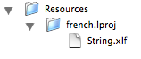
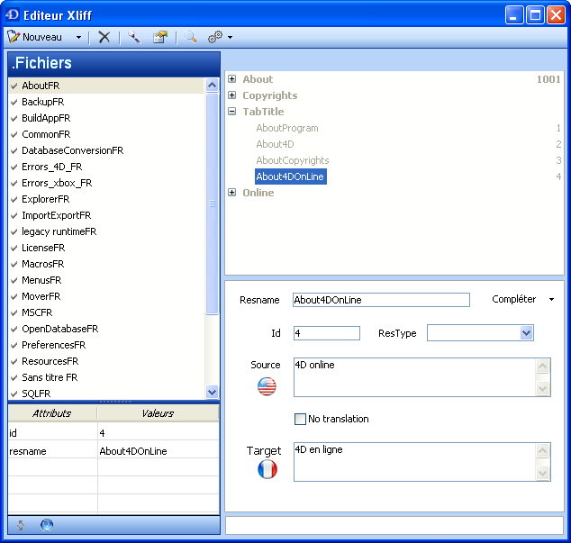
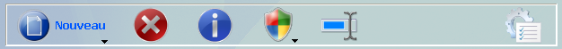
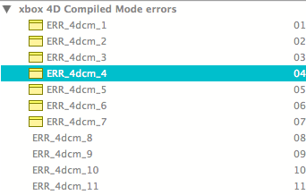
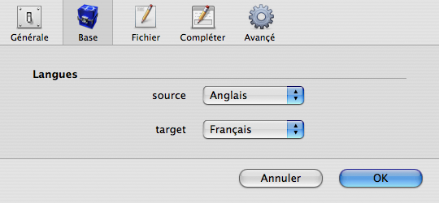
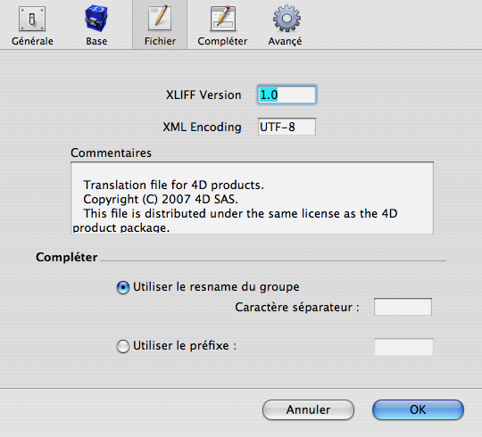
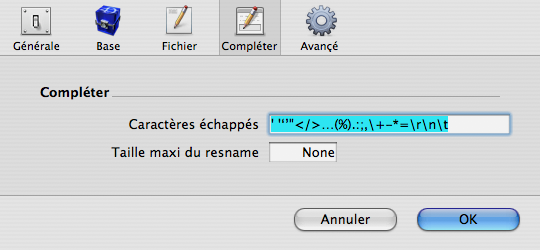

|
|
||||
4DPop XLIFF is a database used to manage XLIFF files to localize your datadases. This database integrates tools to minimize the impact created for converting STR# and TEXT to the new XLIFF standard.
Used as a component, 4DPop XLIFF manages localization files during database development.
Used as a stand-alone database, the editor manages the folder you choose as pending work folder.
Component Installation
| 1. | Create a "Components" folder near the structure of your database (".4db") |
| 2. | Place the folder "4DPop XLIFF.4dbase"* or an alias of this folder into the folder "Components" |
| 3. | Open your database. |
| 4. | If the componant 4DPop is installed a new button "xliff" apears in the toolbar. It allows opening the editor.
If the componant 4DPop is not installed you must, to open the editor, select in the menu " Execute the line "Method..." then select "xliff_EDITOR" then clic on the button "Execute" |

*On Macintosh, the component is a package with extension ".4dbase" who is not necessarily visible according to the adjustabilitys of your preferences.

Use
At the first opening of the editor, this one behaves differently depending of you use an autonomous database or of a component.
- In the case of a autonomous database, you must localize your working folder. Then you can modify it in the editor preferences (cf. Infra).
- In the case of a componant, the working folder is automatically fixed to the current folder "resources" of your database.
In bouth cases, it works identically.
Note : In the component interface and in this document, the bias is not to translate the terms referencing the tags or attributes of the xliff norm, their translation could generate a certain confusion. There are essentially the terms "resname" "source" "target" "translate" "group" & "trans-unit".
Strategy
The editor was conceived to facilitate the localization of an application in development course, thats to say:
- To give a simplified interface by report to professional tools while limiting itself to what is necessary for the integration of the files in 4D.
- To have access to an integrated tool but being able to be eliminated at the time of the deployment, this is possible with the new architecture of the components.
- Create the necessary files and allow their easy usage in the method editor and the form editor or again in the Toolbox of 4D.
- Generate normalized files that you will be able to furnish to localizators that will be able to use their tools and return back the files to day that it suffices to place them in the folder "resources" of the database so that they be immediately and without other manipulation available for the users.
The principle of the XLIFF norm drives to determine a language source in which are written all the strings. This language will be the reference language (the one from which will be done all the translations). The second language is the language said target Who will be used for the dialogs, warnings, prints… This is the language of the user.
The editor was created to manage 2 languages: a language source Who will be often the English and the language of the interface at the moment of the development, but these two languages are able be identical. This are the localizators that will furnish the other language sets from the files that you will furnish for them.
To the first opening, the editor strives to determine on the basis of the content of the work file, language of the system and of the one of the application the values by default for the language source and the language target. This research can for example in the case of an empty folder, of a Swedish system and of a 4D English to deduct that the language source will be the English and the language target the Swedish one. In the case of a French system and of a 4D French the language source and the language target will be in french. The latter cases is completely normal, it under hears that you will write your chains in French and that all the translations will be done from the French.
Although you can modify these languages in the preferences dialog of the editor (cf. Infra). Keep in mind that 4D determines to the opening of the database a current language that must be the development language target. If this is not clear for you, go back to the 4D documentation to know how is chosen the current language to the start. This choice will be function of your organization and modifies the behaviour of the editor.
- If you choose only one language, the editor does ask you to type one chain and does itself the duplicate it in the file. After recording, you obtain a file that you can transmit to the localizer do his translation. (Scenario 1)
- In the case where language source and language target are different, you must type the string in the two languages. At the moment of the recording, the editor creates a localized file (the one of the language target) and a second one intend for the localisateur, without that you need to type it again it. (Scenario 2)
| source | target | Entry | Xliff files | Files on Disk | |
| Scenario 1 | fr | fr | source = "Annuler" | <trans-unit> |
 |
| Scenario 2 | en | fr | source = "Cancel"
target = "Annuler" |
<trans-unit>
|
 |
Editor window
The interface varies following the platform and the OS, but available functionalities remain the same.
|
 |  |
| Master window Mac OS X | Master window Windows XP | Master window Windows Vista |
The editor master window is divided into 5 zones
1] Toolbar
The toolbar allows access to current functions (listed from left to right).
Mac OS X:

- Editor and Current Database Preferences
- Current File Informations
- Add a File
- Add a Group
- Add a String
- Search in the Current File
- Visualize the Source File
Windows XP :

- New : File, Group or String
- Delete Current Element
- Editor and Current Database Preferences
- Current File Informations
- Search in the Current File Current File Informations
- Action (Description of the button in the Status Bar)
Windows Vista :

- New : File, Group or String
- Delete Current Element
- Current File Informations
- Action (Description of the button in the Status Bar)
- Search in the Current File
- Editor and Current Database Preferences
2] List of Files
This zone lists the xliff files of the folder ".lproj" corresponding to the current database language. Selection of a file get it loaded and updates the right part of the window.
Under this list, presented in a permanent manner (XP) or to the request, a visualization zone of the attributes of the selected element

3] Xliff Current File (Strings List)
This zone presents in a hierarchical list the group and trans-unit of the xliff file being edited. The Label displayed is the resname, on the right the element Id. The selection of an element updates the edition zone of the current element.
A specific icon signals a note associated to the String.

A double click on the line opens a window to edit the note. To the closing of the window, if the entry zone is empty, the note is saved, otherwise the note is modified or created if she did not exist yet.

4] Current Element
This zone to enter the resname and ID for one Element group to which ones add the String source, the Attribute translate and eventually, according to the strategy used (cf. supra) the String target for one Element trans-unit.
 |
 |
|
Scenario 1 - language source = language target |
Scenario 2 - language source ≠ language target |
The button "Complete" allows calculating automatically a resname from the value of the string source, from auto-completion parameters and preferences of the current file (cf. infra).
5] Status Bar
The statute bar groups together the following functions.
| Label | OS X | XP | Vista | Function |
| Switch | Close the Editor window and displays insertion Palette (cf. Infra) | |||
| Attributs | - | Display/Hide the attributes of the current Element | ||
| Standard | Open the standard document available on the site www.oasis-open.org | |||
| Action | Contextual shortcut to current actions. |
The button "Action" displays a menu grouping together the current actions.
 |
The line "Validate using the DTD" allows launching a validation and to post the first error eventually met. A valid file is signaled by a validation notch, a file presenting an abnormality is preceded of an alarm icon.
"Import a STR# resource " allows importing in the form of an a group a STR# resource . This function allows passing progressively from the old to the new localization mechanism. To work, You must place the resources to import in a named file "Localized.rsrc", a file in the current language and a file in the source language, if it's different. To the guest you indicate the Nº of string list to import. If the id is valid, a group is created from the (of the two) resources. |
Copy, Paste
When a group is selected and copied through the menu "Edit", his name and his definition are placed in the clipboard. It is then possible to paste the entirety of the group, of its strings and attributes in another file or in the current file (duplicate) by selecting the item "Copy" from the Edit menu.
When a list of strings is selected and copied through the menu "Edit", the text of his reference (":xliff:resname") and his definition are placed in the clipboard. It is then possible to paste the string and its attributes in another group of the current file or of another file. The reference can be pasted in a entry zone cf. infra.
Insert of the xliff references in the methods and the form objects
1] Drag, Drop
The insertion of xliff references is done in the majority of cases by drag & Drop from the string list. The result depending on element dragged (group ou string), window of first plan and eventually of the behavior of modifyer keys:
| Element Dragged | Front window | Action | ||||||
| String* | Method Editor | Pasted Text: "Read string translation("Resname")"
If the string includes an accolade sequence opening and closing {..} the pasted text will be : "Replace string(Read string translation("Resname");"{...}"; replacement)" |
||||||
| String* | Form Editor |
|
||||||
| String* | Text entry zone
e.g. menu title or of line in the menu editor |
Pasted Text:
":xliff:Resname" |
||||||
| Group | Method Editor | Pasted Text: (creation of an array from a group) "ARRAY TEXT($tTxt_Labels;N) Si les resnames are incremented (Resname1, Resname2, ..., ResnameN) the pasted text will be: |
||||||
| Group
+ Capital |
Éditeur de méthode | Pasted Text: (Creation of a menu from a group) "$a16_Menu:=Create menu If the resnames are incremented (Resname1, Resname2, ..., ResnameN) the pasted text will be: |
* The text in the container is determined according to the type of the window of first plan at drag start. You can invert the carried out choice (code or reference) in keeping Option key pressed when you begin the Drag.
2] Copy, Paste
It is possible to select a line of the string list, to copy it, then to paste it in the form of a reference in an entry zone of the palette property where in all entry zones for which drag & drop is ineffective. The text placed in the clipboard is in the form ":xliff:Resname".
Insertion palette
Once the strings are created, you can use the palette that represents a more reduced interface while presenting only the string list zone of the current file and a selection menu to select a current file in the status bar zone.

The Drag&drop and Copy paste are active to insert the xliff references in the editors of 4D as described above. It is not possible to modify the files in the palette.
The zone placed between the list of strings and the status bar allows to visualize the selected string in the current language.
Preferences
The position of the editor window, palette, the last edited used file, the position of the delimiters in the editor are memorized automatically for the machine and returned at the next opening.
The preferences for the editor, the current database or the current file are accessible through the preferences icon of the editor.
1] General editor preferences

a) Current resources folder
Allows setting up the working resources folder in the case of a stand alone database. When the database is used as component, the working resources folder is the one of the database and cannot be modified.
b) Default values
It is the xliff version used, XML encodage and default comments at the time of creation for new files.
The comments zone accepts variable zones (between accolades opening and closing) that will be evaluated at the time of the file creation:
- {year} will be replaced by the year
- {month} will be replaced by the month
- {date} will be replaced by the date
- {database} will be replaced by the name of the structure file
2] Current base parameters

This is there that are modified the languages source and target of the current database.
3] Current files parameters

a) Attributs of the current file
This page allows showing and to modify the attributes of the current file in edition: xliff Version, encodage and comments.
a) Complete
Auto-complétion parameters of the resnames Current file. The different options modify the behavior of the button " Complete" of the current element edition zone.
4] Auto completion parameters (interbase)

Note : Preferences are stored in the file "4D XLIFF Editor preference.xml" placed in the file active 4D folder for the preferences "interbases" and the folder "Preferences" folder of the current database for the items specific to the database.
Source code provided
This component is given in compiled version, but you will find the code source in the folder "Sources" inside the component folder.